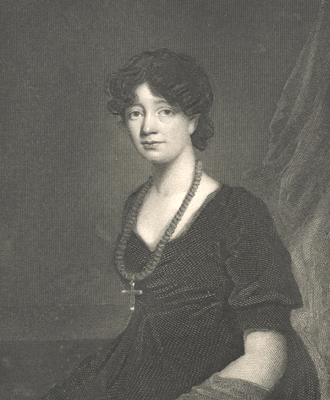

|
|
Home | Corson
Collection | Biography | Works | Image
Collection | Recent
Publications | Correspondence | Forthcoming
Events | Links | E-texts | Contact
James Saxon's Portrait of Sir Walter Scott
(1805)
The portrait painted by James Saxon in 1805 was the first
to be made of Scott after he achieved public prominence as
a writer. Earlier that same year, his first narrative poem The Lay
of the Last Minstrel had been published, bringing
Scott immediate and lasting success. A three-quarter length
portrait measuring 48½ x 38½ inches, Saxon's
painting depicts Scott sitting in an armchair and facing
slightly to the left. He is holding a glove in his right
hand and resting
his left arm on his bull-terrier Camp who
is seated on his knee. His hair is brown. The seat of the chair
and the curtain in the background are red. Lockhart judged
it 'a very fine picture, representing I have no doubt, most
faithfully, the author of The Lay of the Last Minstrel' (IX,
259-60).
The picture was painted for Scott's wife Charlotte then
ceded to Scott's London publisher Longmans who wished to have
it engraved. They engaged James
Heath to make an engraving
in stipple which was published as the frontispiece to the 2nd
impression of The Lady of the Lake in 1810. |
Click on the thumbnail to see a full-size
engraving of James
Saxon's portrait of Scott made by
James Heath (1810). |
|
The original portrait now hangs in the Scottish
National Portrait Gallery. Saxon painted a companion piece
in 1810, portraying Charlotte, which hangs at Abbotsford.
See, below, an engraving by George
Baird Shaw prepared as a frontispiece
for vol. V of the 2nd edition of Lockhart's Memoirs
of the Life of Sir Walter Scott, Bart.

Bibliography
- Lockhart, John Gibson. Memoirs
of the Life of Sir Walter Scott, Bart., 2nd edn (Edinburgh:
R. Cadell, 1839)
- Russell, Francis. Portraits
of Sir Walter Scott: A Study of Romantic Portraiture (London:
The Author, 1987)
Back to Index

Last updated: 09-Nov-2004
© Edinburgh University Library
|
|